Data Mechanics
Course Overview — Database Design and ER Models
Data Science 310 — Boston University
Based on notes by David G. Sullivan, Ph.D.
Data Mechanics and Data Science
- Data science involves
- Understanding how to ask and answer domain specific questions using data
- Techniques for modelling, learning, and predicting
- Algorithmic and programming tools for data mining and machine learning
- Skills needed to manage and analyze massive structured and unstructured datasets
- This course teaches the foundations of data management
- Databases
- Database Management Systems (DBMSs)
Databases and DBMSs
- A database is a collection of related data.
- refers to the data itself, not the program
- Managed by some type of database management system (DBMS)
The Conventional Approach
- Use a DBMS that employs the relational model
- use the SQL query language
- Examples: IBM DB2, Oracle, Microsoft SQL Server, MySQL
- Typically follow a client-server model
- the database server manages the data
- applications act as clients
- Extremely powerful
- SQL allows for more or less arbitrary queries
- support transactions and the associated guarantees
Limitations of the Conventional Approach
- Can be overkill for applications that don’t need all the features
- Can be hard / expensive to setup / maintain / tune
- May not provide the necessary functionality
- Footprint may be too large
- example: difficult to put a conventional RDBMS on a small embedded system
- May be unnecessarily slow for some tasks
- overhead of IPC, query processing, etc.
- Does not scale well to large clusters
What Other Options Are There?
- View a DBMS as being composed of two layers.
- At the bottom is the storage layer or storage engine.
- stores and manages the data
- Above that is the logical layer.
- provides an abstract representation of the data
- based on some data model
- includes some query language, tool, or API for accessing and modifying the data
- To get other approaches, choose different options for the layers.
Course Overview
- data models/representations (logical layer), including:
- entity-relationship (ER): used in database design
- relational (including SQL)
- semistructured: XML, JSON
- noSQL variants
- implementation issues (storage layer), including:
- storage and index structures
- transactions
- concurrency control
- logging and recovery
- distributed databases and replication
Course Staff
- Instructor:
- Mark Crovella (crovella@bu.edu)
- Teaching fellows
- Course Assistant
- Office hours: Calendar on Piazza
- For questions: post on Piazza
Prerequisite
- DS 110 and DS 210
- data structures
- proficiency in Python
- see me if you’re not sure
Course Materials
- Slides: will be posted on Piazza
- Optional textbooks:
- Database System Concepts (7th edition) by Silberschatz, Korth, and Sudarshan
- Database Systems: The Complete Book (2nd edition) by Garcia-Molina et al.
- Database Management Systems by Ramakrishnan & Gehrke
Grading
- Eight homework assignments (40%)
- Late assignments are not accepted
- Your score will be calculated based on the 7 highest homeworks
- So you can skip one homework without grade impact
- Homework 1 is already assigned; due Sept 12
- Participation (10%)
- Attending 85% of discussion sections gets you full credit
- Exams
- Midterm (20%) – during lecture Oct 17, no makeups!
- Final (30%) – Cumulative
Review
Policies:
- Generative AI
- Academic Honesty
Schedule of Topics
… on the syllabus
Database Design
- In database design, we determine:
- which pieces of data to include
- how they are related
- how they should be grouped/decomposed
- End result: a logical schema for the database
- describes the contents and structure of the database
ER Models
- An entity-relationship (ER) model is a tool for database design.
- graphical
- implementation-neutral
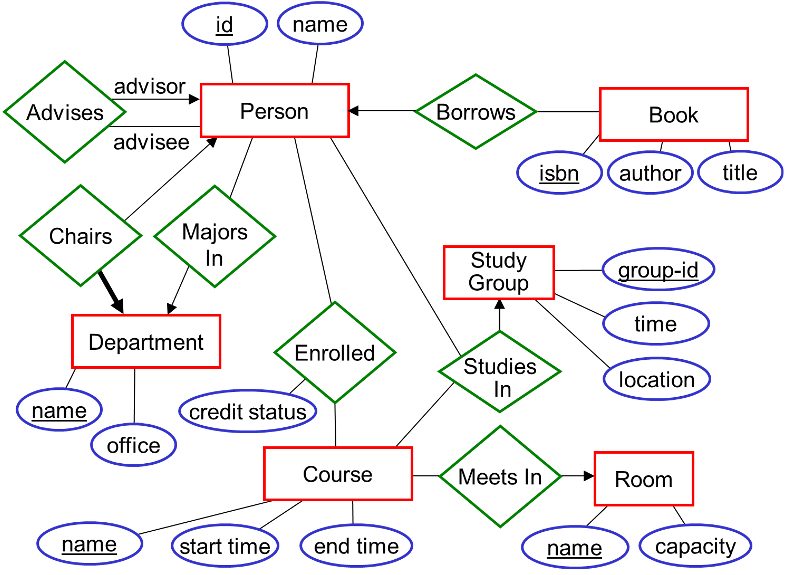
- ER models specify:
- the relevant entities (“things”) in a given domain
- the relationships between them
Sample Domain: A University
- Want to store data about:
- employees
- students
- courses
- departments
- How many tables do you think we’ll need?
- This can be hard to tell before doing the design!
- In particular, hard to determine which tables are needed to encode relationships between data items
Entities: the “Things”
- Represented using rectangles.
- Examples:
- Strictly speaking, each rectangle represents an entity set, which is a collection of individual entities.
Attributes
Associated with entities are attributes that describe them.
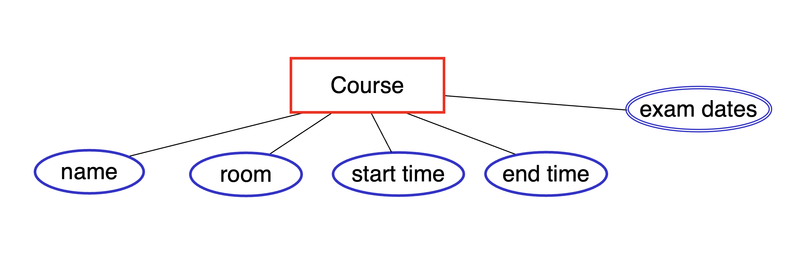
- represented as ovals connected to the entity by a line
- double oval = attribute that can have multiple values
Keys

- Possible keys include:
- id
- email
- (id, email)
- (id, name)
Candidate Key
A candidate key is a minimal collection of attributes that is a key. Note that minimal = no unnecessary attributes are included (not the same as minimum)

Example 1: assume (name, address, age) is a key for Person
- It is a minimal key because we lose uniqueness if we remove any of the three attributes.
Observe that:
- (name, address) may not be unique, e.g., a father and son with the same name and address
- (name, age) may not be unique
- (address, age) may not be unique

Example 2: (id, email) is a key for Person
- It is not minimal, because just one of these attributes is sufficient for uniqueness
- It is not a candidate key
Keys and Candidate Keys (cont.)
Consider an entity set for books:
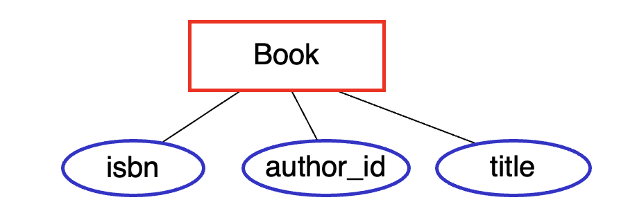
Assume that:
- each book has a unique isbn
- an author doesn’t write two books with the same title
Which of these are candidate keys of this entity set?
A. isbn — yes
B. (author_id, title) — yes, both needed for uniqueness
C. (author_id, isbn) — no, author_id isn’t needed
D. A and B, but not C
E. A, B, and C
Answer: D. A and B, but not C
Which of these are keys of this entity set?
A. isbn.
B. (author_id, title).
C. (author_id, isbn).
D. A and B, but not C.
E. A, B, and C.
Answer: E. A, B, and C — adding author_id to isbn still uniquely identifies a book; it’s just not minimal.
Key vs. Candidate Key
Consider the same Book entity set, with the assumption that each book has a unique isbn and an author doesn’t write two books with the same title.
isbn |
yes |
yes |
author_id, title |
yes |
yes |
author_id, isbn |
yes |
no |
author_id |
? |
? |
Answer: Key is no, and candidate key is no — author_id by itself cannot be used to uniquely identify a book, so it’s not a key, and since it’s not a key, it can’t be a candidate key.
Primary Key
- We typically choose one of the candidate keys as the primary key.
- In an ER diagram, the primary key attribute(s) are underlined.
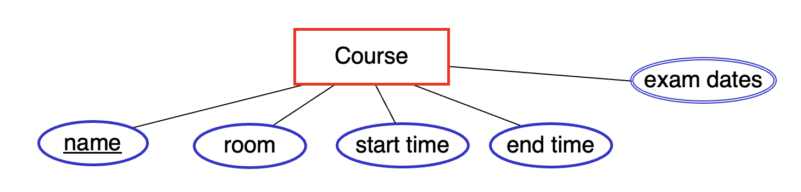
Relationships Between Entities
- Relationships between entities are represented using diamonds that are connected to the relevant entity sets.
- For example: students are enrolled in courses
- Another example: courses meet in rooms
Relationships Between Entities (cont.)
- Strictly speaking, each diamond represents a relationship set, which is a collection of relationships between individual entities.
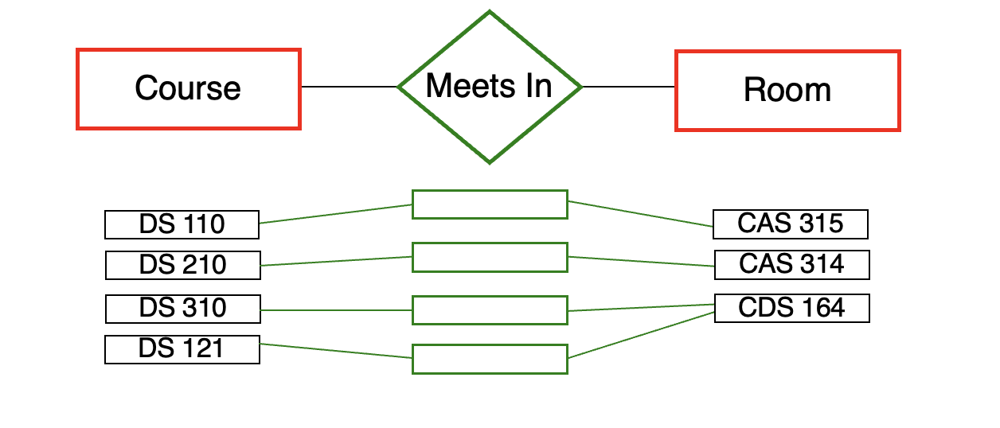
- In a given set of relationships:
- an individual entity may appear 0, 1, or multiple times (e.g. CDS 164)
- a given combination of entities may appear at most once
- example: the combination (DS 110, CAS 315) may appear at most once
Attributes of Relationships
A relationship set can also have attributes.These attributes specify information associated with the relationships in the set.
Example:
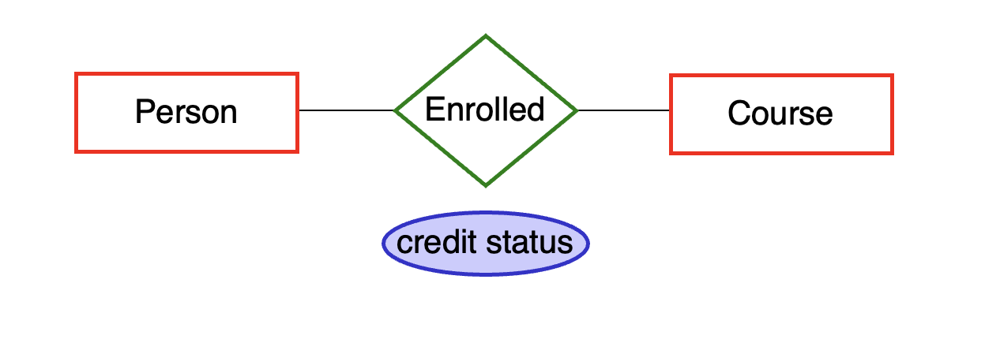
Key of a Relationship Set
A key of a relationship set can be formed by taking the union of the primary keys of its participating entities.
Example: (person.id, course.name) is a key of enrolled
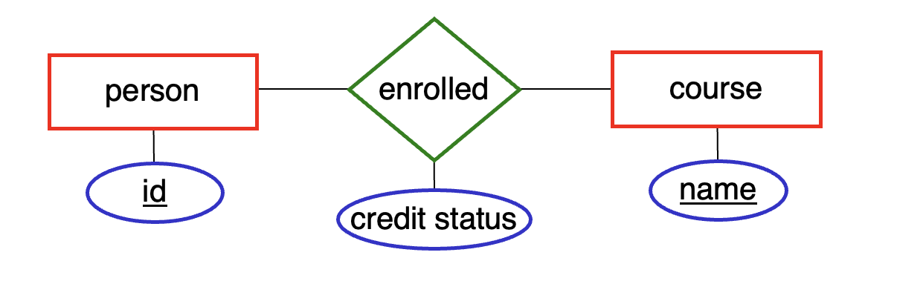
The resulting key may or may not be a primary key. Why?
Degree of a Relationship Set
Enrolled is a binary relationship set: it connects two entity sets. It has a degree = 2.
It’s also possible to have higher-degree relationship sets. A ternary relationship set connects three entity sets. It has degree = 3.
Relationships with Role Indicators
- It’s possible for a relationship set to involve more than one entity from the same entity set.
- For example: every student has a faculty advisor, where students and faculty members are both members of the Person entity set.
- In such cases, we use role indicators (labels on the lines) to distinguish the roles of the entities in the relationship.
Cardinality (or Key) Constraints
- A cardinality constraint (or key constraint) limits the number of times that a given entity can appear in a relationship set.
Example: each course meets in at most one room
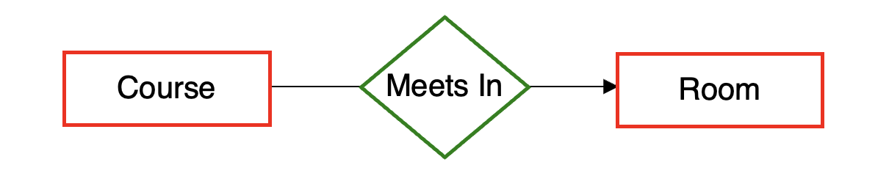
- A key constraint specifies a functional mapping from one entity set to another.
- each course is mapped to at most one room (course → room)
- As a result, each course appears in at most one relationship in the meets in relationship set.
- The arrow in the ER diagram has same direction as the mapping.
Cardinality Constraints (cont.)
- The presence or absence of cardinality constraints divides relationships into three types:
- many-to-one
- one-to-one
- many-to-many
- We’ll now look at each type of relationship.
Many-to-One Relationships
- Meets In is an example of a many-to-one relationship.
- We need to specify a direction for this type of relationship.
- example: Meets In is many-to-one from Course to Room
- Each course participates in at most one Meets In relationship.
- could be 0 (if the course doesn’t have a room)
- could be 1
- cannot be more than 1
- Each room can participate in an arbitrary number (0, 1, 2, …) of Meets In relationships.
Many-to-One Relationships (cont.)
In general, in a many-to-one relationship from A to B:
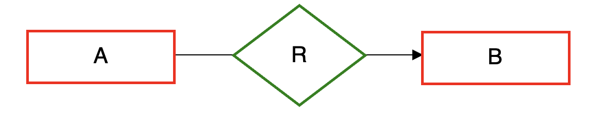
- an entity in A can be related to at most one entity in B
- an entity in B can be related to an arbitrary number of entities in A (0 or more)
Another Example of a Many-to-One Relationship
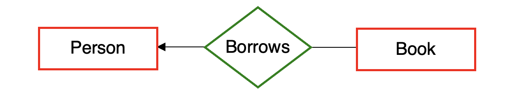
- The diagram above says that:
- a given book can be borrowed by at most one person
- a given person can borrow an arbitrary number of books
- Borrows is a many-to-one relationship from Book to Person.
One-to-One Relationships
- In a one-to-one relationship involving A and B: [not from A to B]
- an entity in A can be related to at most one entity in B
- an entity in B can be related to at most one entity in A
- We indicate a one-to-one relationship by putting an arrow on both sides of the relationship:
- Example: each department has at most one chairperson, and each person chairs at most one department.
Many-to-Many Relationships
- In a many-to-many relationship involving A and B:
- an entity in A can be related to an arbitrary number of entities in B (0 or more)
- an entity in B can be related to an arbitrary number of entities in A (0 or more)
- If a relationship has no cardinality constraints specified (i.e., if there are no arrows on the connecting lines), it is assumed to be many-to-many.
How can we indicate that each student has at most one major?
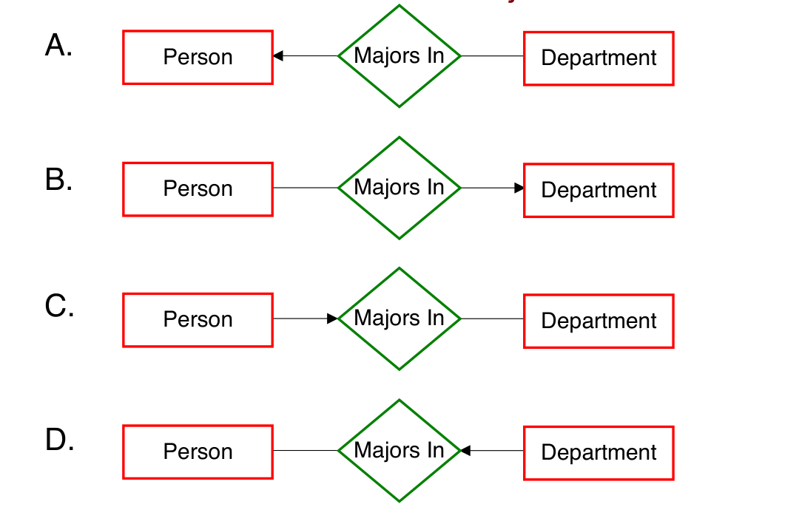
- Answer: B. The arrow goes from Person into Majors In (toward Department), encoding “each Person majors in at most one Department.”
What type of relationship is Majors In?
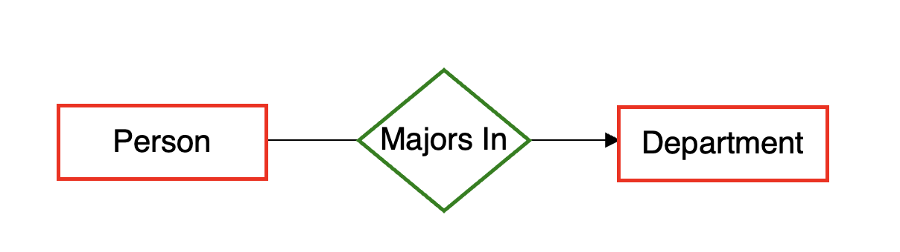
A. many-to-many
B. many-to-one from Person to Department
C. many-to-one from Department to Person
D. one-to-one
- Answer: B. many-to-one from Person to Department
- A given person can major in at most one department.
- A given department can have an arbitrary number of people majoring in it.
What if each student can have more than one major?
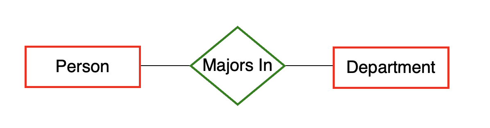
- Observe that there are no arrows.
- Majors In is what type of relationship in this case?
Cardinality Constraints and Ternary Relationship Sets
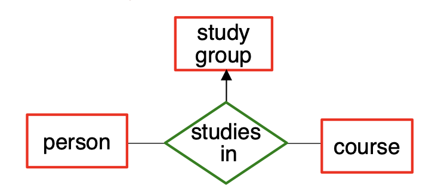
- The arrow into “study group” encodes the following constraint: “a person studies in at most one study group for a given course.”
- In other words, a given (person, course) combination is mapped to at most one study group.
- a given person or course can itself appear in multiple studies-in relationships
- For relationship sets of degree >= 3, we use at most one arrow, since otherwise the meaning can be ambiguous.
Participation Constraints
- Cardinality constraints allow us to specify that each entity will appear at most once in a given relationship set.
- Participation constraints allow us to specify that each entity will appear at least once (i.e., 1 or more time).
- indicate using a thick line (or double line)
- Example: each department must have at least one chairperson.
- We say Department has total participation in Chairs.
- by contrast, Person has partial participation
Participation Constraints (cont.)
We can combine cardinality and participation constraints.
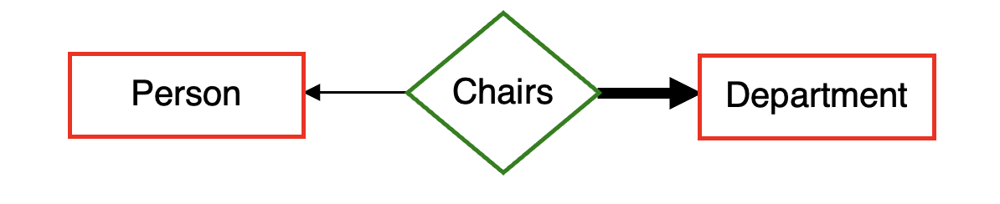
- a person chairs at most one department
- specified by which arrow? the one into Department
- a department has exactly one person as a chair
- arrow into Person specifies at most one
- thick line from Dept to Chairs specifies at least one
- at most one + at least one = exactly one